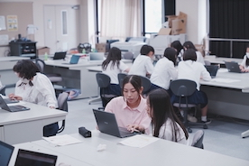
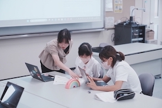
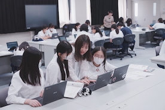

Laboratory Life
育英西中学校で中学1, 2年生向けのプログラミング講座を実施しました。 日時: 2023年9月8日 場所: 育英西中学校




概要
育英西中学校で中学1,2年生向けのプログラミング講座を実施しました！
中学1年生向けには、Scratch(スクラッチ)というビジュアルプログラミング言語を用いて「ネイルゲーム」の開発に取り組んでもらいました。
受講した生徒達は皆さんプログラミング初体験だったので、戸惑いを見せていましたが、
自分で組んだプログラムがうまく動くと、生徒同士で見せあって喜んだり、
うまく動かないときはお互いに教えあったり、積極的に参加してくれていました。
中学2回生向けには、JavaScriptとCSS、HTMLを用いて「動物スロット」の開発に取り組んでもらいました。
JavaScriptとCSS、HTMLという3つのプログラミング言語を用いるため、複雑で難しい内容でしたが、
熱心に講義を聞きながら理解しようと頑張る姿がとても印象的でした。
今回の講義を通して、少しでもプログラミングに興味をもってもらえていれば嬉しいです(^^)